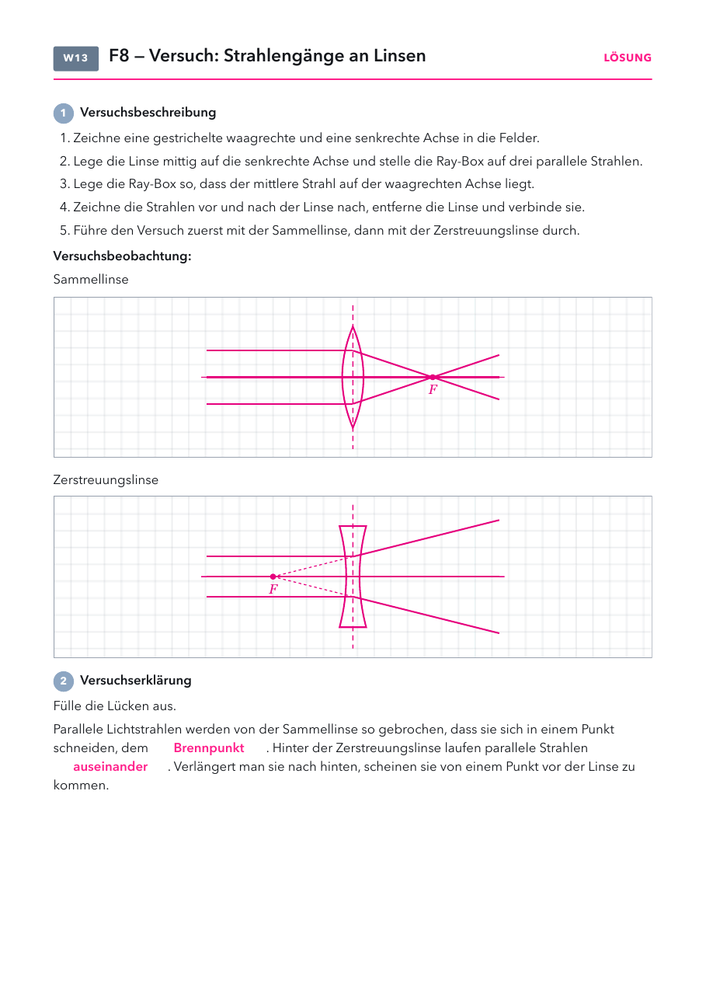

- Versuchsblatt: Seite 1, eins pro Schüler (zwei Zeichenfelder).
- Folien und Lösungen: nicht drucken.
Material
Demo (für dich)
| Material | Anzahl | Hinweis |
|---|---|---|
| Lupen | mehrere | zum Durchgeben beim Einstieg |
| Sammellinse als Brennglas | 1× | nur bei Sonne, Papier auf feuerfester Unterlage |
Schülerversuch (pro Gruppe)
| Material | Anzahl | Hinweis |
|---|---|---|
| Ray-Box mit drei parallelen Strahlen | 1× | |
| Sammellinse (Linsenprofil) | 1× | in der Mitte dicker |
| Zerstreuungslinse (Linsenprofil) | 1× | am Rand dicker |
Raum abdunkeln. Leitfrage 8 geht in der nächsten Doppelstunde weiter: Bildentstehung, Lupe, Auge.
Die Stunde
1 · Einstieg
2 · Versuch
3 · Erklären
4 · Alltag
1
Einstieg
Lupen durchgeben, Leitfrage 8, Vermutungen.
Lupen durchgeben, Leitfrage 8, Vermutungen.
2
Versuch
Drei parallele Strahlen an beiden Linsen, Versuchsblatt.
Drei parallele Strahlen an beiden Linsen, Versuchsblatt.
3
Erklären
Sammellinse, Zerstreuungslinse, Brennpunkt.
Sammellinse, Zerstreuungslinse, Brennpunkt.
4
Alltag
Brennglas vorne, Beispiele mündlich.
Brennglas vorne, Beispiele mündlich.
Folie 1
Beobachte
Dieselbe Schrift, einmal ohne und einmal mit Lupe. Was fällt dir auf?
Folie 2
Leitfrage 8
Wie kann eine Lupe vergrößern?

Was vermutest du? Wir sammeln eure Vermutungen.
Folie 3 · Schülerblatt mit Lösung
📄 Versuchsblatt austeilen · Versuch in Gruppen

Folie 4
17. Sammellinse und Zerstreuungslinse
Sammellinsen (konvex) brechen parallel einfallendes Licht so, dass es sich im
Brennpunkt bündelt. Zerstreuungslinsen (konkav) lassen
das Licht auseinanderlaufen.
Folie 5
Linsen im Alltag
| im Alltag | was man sieht | warum |
|---|---|---|
| Brille | scharf sehen | Die Linsen der Brille helfen dem Auge, ein scharfes Bild zu erzeugen. |
| Handykamera | ein Bild auf dem Sensor | Eine kleine Sammellinse bündelt das Licht auf dem Sensor. |
| Glasflasche im Wald | trockenes Laub kann brennen | Sie wirkt wie ein Brennglas und bündelt das Sonnenlicht. |
| Wassertropfen | die Schrift darunter wirkt größer | Ein Tropfen ist in der Mitte dicker, also eine kleine Sammellinse. |
Frage: Woran erkennst du, ob eine Linse sammelt oder zerstreut?
Antwort: Eine Sammellinse ist in der Mitte dicker als am Rand, eine Zerstreuungslinse am Rand dicker. Durch eine Sammellinse sieht man nahe Dinge vergrößert, durch eine Zerstreuungslinse verkleinert.
Antwort: Eine Sammellinse ist in der Mitte dicker als am Rand, eine Zerstreuungslinse am Rand dicker. Durch eine Sammellinse sieht man nahe Dinge vergrößert, durch eine Zerstreuungslinse verkleinert.
Sammel- und Zerstreuungslinse
- Eine Linse bricht das Licht zweimal, beim Eintritt und beim Austritt. Am Rand treffen die Strahlen schräger auf und werden stärker abgelenkt.
- Brennweite: Abstand vom Brennpunkt zur Linsenmitte. Je stärker die Linse gewölbt ist, desto kürzer die Brennweite. Die Brechkraft einer Brille wird in Dioptrien angegeben (1 durch Brennweite in Metern).
- Bei der Zerstreuungslinse ist der Brennpunkt der Punkt, von dem die Strahlen zu kommen scheinen. Er liegt auf der Seite, von der das Licht kommt.
- Typische Fehlvorstellungen: Der Brennpunkt liegt immer an der Linse. Dicke Linsen sammeln immer, egal wie sie geformt sind.
Tipps zum Versuch
- Die Ray-Box so legen, dass der mittlere Strahl genau auf der Achse liegt. Sonst wird er schon an der Linsenmitte abgelenkt.
- Erst Strahlen vor und hinter der Linse mit Bleistift nachfahren, dann die Linse wegnehmen und verbinden.
- Brennglas: Nur auf feuerfester Unterlage, niemand schaut dabei durch die Linse in die Sonne.
Linsenlabor
Labor öffnenAlle LaboreDrei parallele Strahlen, Wölbung und Brennweite, Brennglas mit verschiebbarem Papier, Ausblick Bildentstehung mit Lupenbild.
Versuchsblatt Strahlengänge an Linsen
PDF öffnenLösung: Sammellinse: Die drei Strahlen schneiden sich im Brennpunkt. Zerstreuungslinse: Die Strahlen laufen auseinander, rückwärts verlängert treffen sie sich im Brennpunkt vor der Linse. Lücken: Brennpunkt, auseinander.